A real recording, not a mockup. This is the dashboard on a working Mac.
Activity Monitor forgets. Procwatch records every process, then tells you what happened in a sentence, with the numbers underneath.
One command in Terminal is the whole install. Nothing needs sudo. Prefer to read it first? Here it is.
macOS · Python 3.9+ · MIT licence · no third-party dependencies
A real recording, not a mockup. This is the dashboard on a working Mac.
History
Scroll back and click. Every process that was running, with what it used.
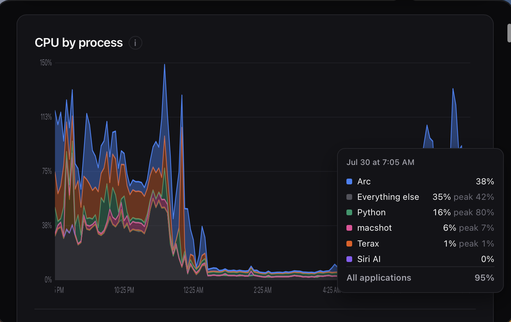
Always on
A launchd agent, every thirty seconds, across restarts. About 1% of a core.
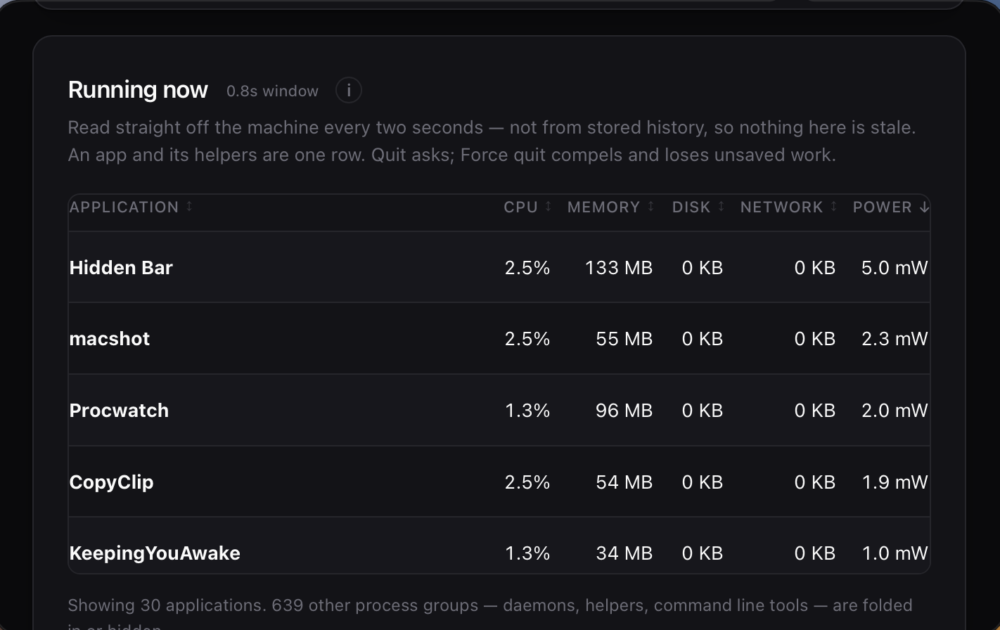
Dashboard
CPU, memory, network, disk and swap, stacked by process rather than one flat line.
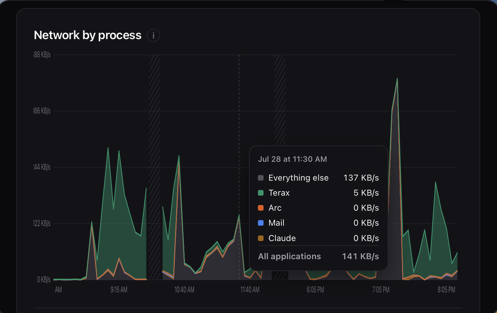
The answer
One sentence in the toolbar. The findings, and the numbers behind them, under it.
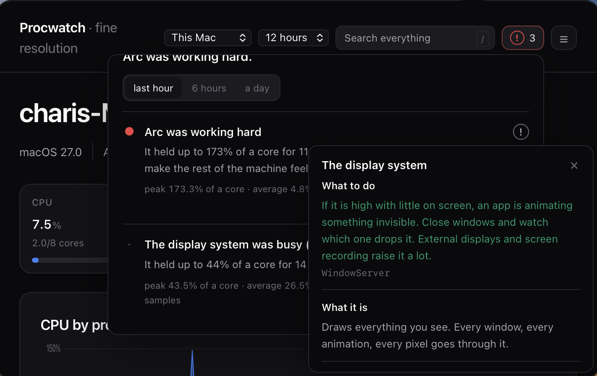
92 processes, explained
What it is, whether busy is normal for it, and what it normally costs on your Mac.
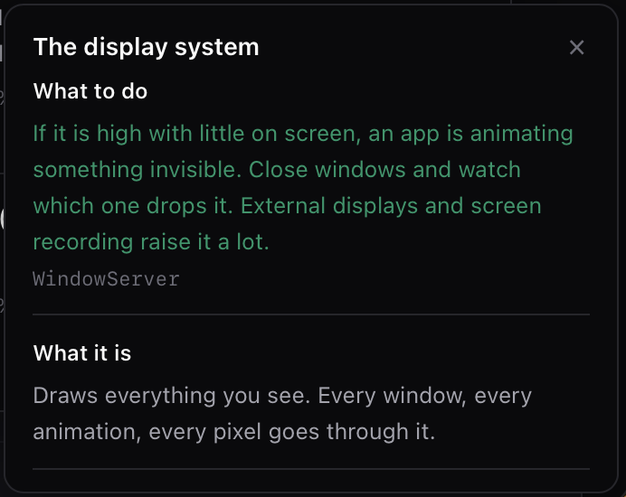
Battery
The battery line, and the area under it divided by who spent it. “About 3.55 Wh.”
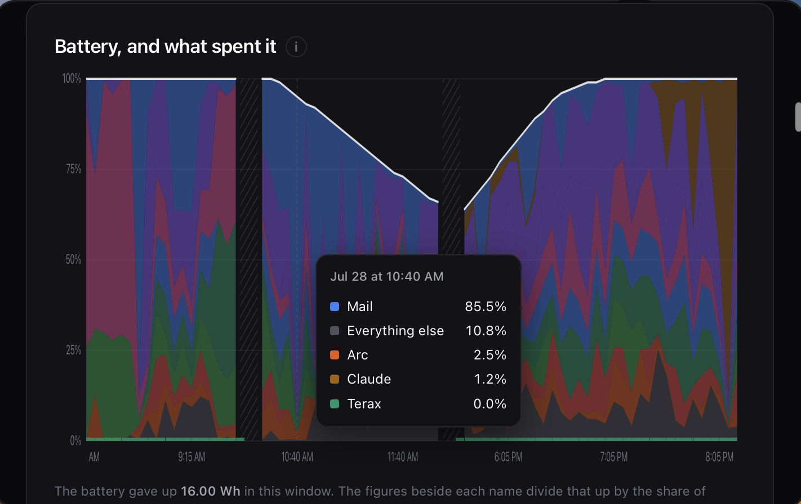
What happened
Crashes, hangs, restarts, installs, the power log. One timeline, read for you.
A wake, the backup it triggers and the indexing after it are one thing, not three.
“Nine times in four days, six of them just after waking.”
The fortieth time is background. The first time is news.
A year at a glance
One cell a day, a full year. Hollow means nothing recorded, which is not the same as idle.
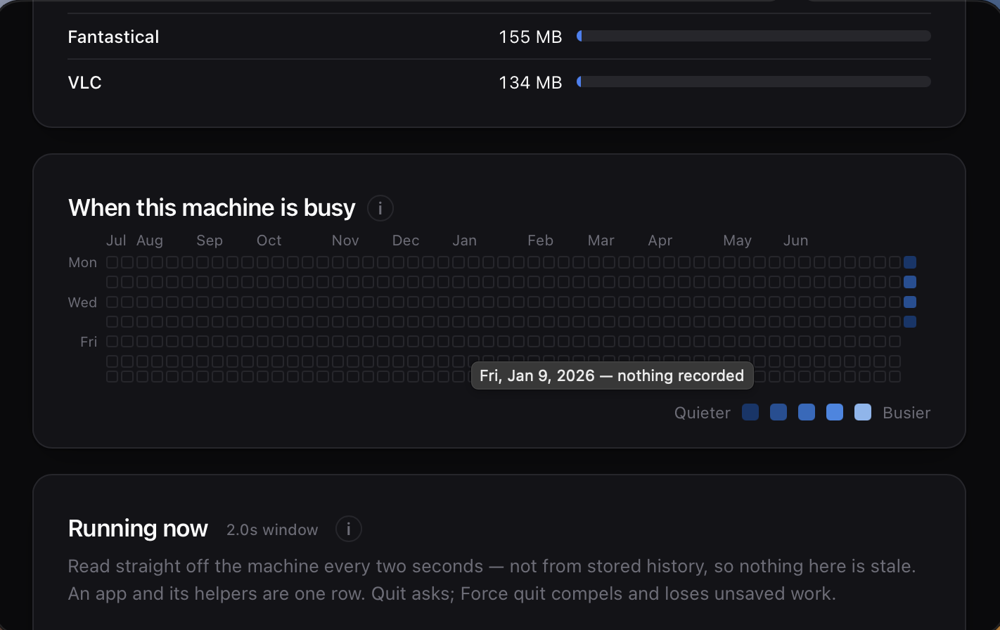
After an update
Every version measured. Four updates that each changed nothing can still double the memory.
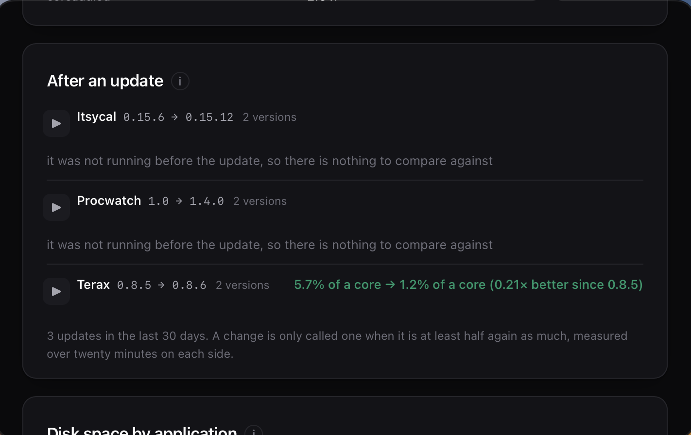
Sleep
What woke it, and what stopped it sleeping. A program can hold a Mac awake for thirty hours.
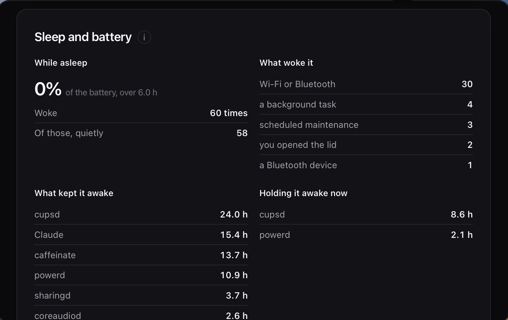
Disk space
Bundle, data and caches, separately. Dragging an app to the Bin leaves the rest.
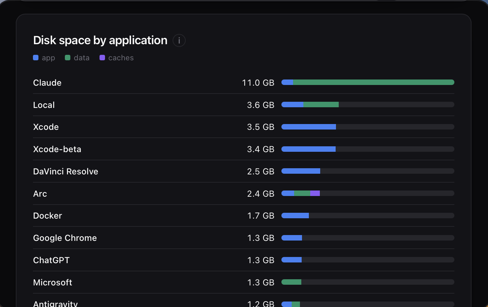
Open ports
Every listening port, the process behind it, and a button to end it.
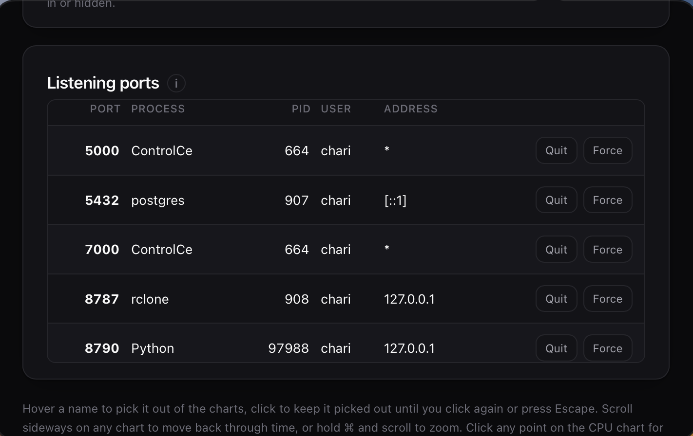
Every Mac you own
Three words and an address. That port is read-only, so nothing can be ended through it.
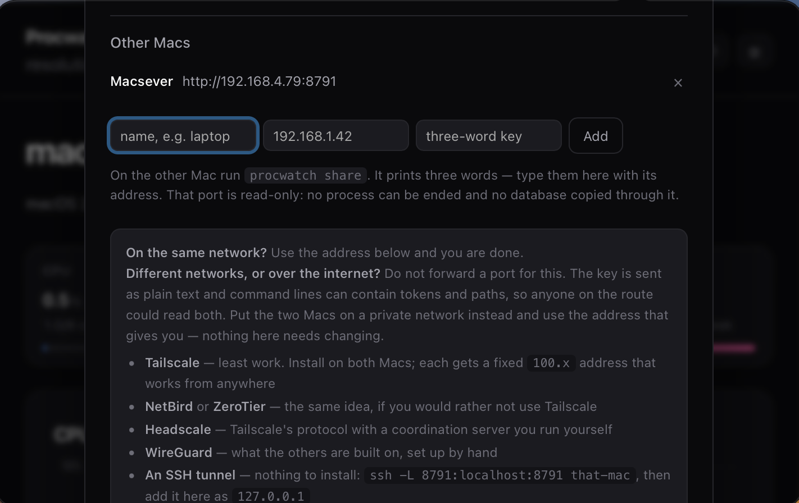
From cumulative cputime deltas. ps's own %CPU lags a spike by a minute.
80% held for ten minutes, not one spike. Notified whether or not the page is open.
The whole dashboard in a panel. No Dock icon.
Thirty seconds for a week, five minutes for a month, hourly for a year.
A consistent copy while the sampler writes, and CSV of any window.
One Python file. No packages, no account, nothing leaves the Mac.
A notification the first time something turns up. Quiet for six hours after.
Unread findings in place of the icon. Press it and the icon returns.
procwatch share prints a link and three words. Read-only.
Paste that in Terminal. The script installs the tool, schedules the
recorder every 30 seconds, and builds the menu bar app if
swiftc
is available. Nothing needs sudo.
Prefer to read it first:
install.sh.
Or clone the
repository
and run sh install.sh.
Every build is on the
releases page.
After install
Local history. Named processes. Free and open source. Every build is on the releases page.
Requires macOS and Python 3.9 or later